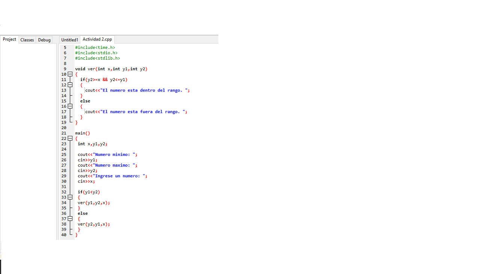
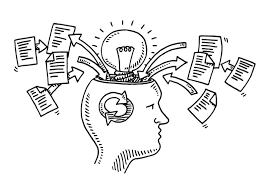

Actividad semana 13
A continuación, el ejercicio propuesto:

Opinión
Este ejercicio me resultó fácil de hacer, ya que tenía como base el ejercicio que fué realizado en la misma clase, lo cual me facilitó entender la lógica de este ejercicio y no solo facilitar la ejecución del mismo sino también poder tener claros una veez más los conceptos que eran empleados en el ejercicio para que se pudiera ejecutar, recalcando también que me desenvuelvo de una mejor manera en estos eercicios de funciones, gracias a las explicaiones d eclase y la participación d emis compañeros y mía.
